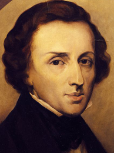

Chopin's music, his status as one of music's earliest superstars, his association (if only indirect) with political insurrection, his love life and his early death have made him a leading symbol of the Romantic era in the public consciousness. His works remain popular, and he has been the subject of numerous films and biographies of varying degrees of historical accuracy.